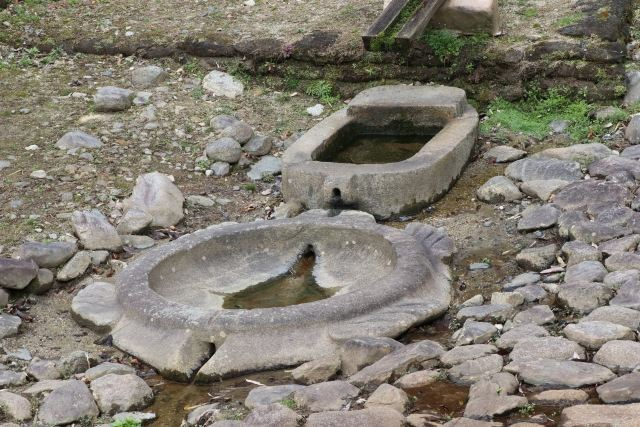
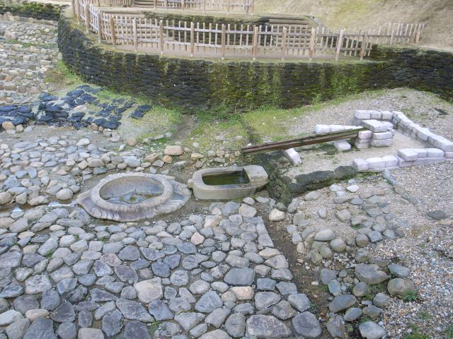

亀の形をした石造物
亀の姿に加工された特徴的な石造物で、飛鳥時代の高度な加工技術を見ることができます。

亀形石造物は、明日香村岡の酒船石遺跡にある飛鳥時代の石造施設です。 亀の形に加工された石造物で、周囲の石槽や導水施設とともに、古代の祭祀や宮廷行事に関係する施設だったと考えられています。 飛鳥時代の高度な石加工技術を感じられる、明日香を代表する歴史スポットです。
| 見学時間 | 9:00〜17:00（最終入場16:45） ※12月〜2月は16:00まで（最終入場15:45） |
|---|---|
| 定休日 | 年末年始 |
| 料金 |
大人（高校生以上）300円 小・中学生 100円 |
| 所要時間 | 約15分 |
| 駐車場 | 奈良県立万葉文化館駐車場 （徒歩約1分・普通車500円） |
| アクセス |
近鉄飛鳥駅から徒歩約45分。 明日香周遊バス「万葉文化館」バス停から徒歩約3分。 酒船石と合わせて見学できます。 |
| 地図 | 地図はこちら |

亀の姿に加工された特徴的な石造物で、飛鳥時代の高度な加工技術を見ることができます。

石槽や導水施設と組み合わせた構造から、古代の祭祀や利用方法について研究されています。
亀形石造物は、酒船石遺跡で発見された飛鳥時代の石造施設です。 亀の形をした石造物と小判形の石槽が組み合わされ、水を利用した施設として復元されています。 用途については諸説ありますが、古代の宮廷文化や祭祀を考えるうえで重要な遺構です。